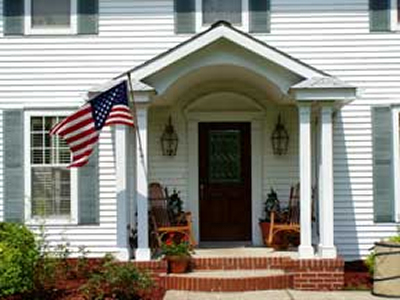

Home Services / Remodeling
Make room for the life you live.


Kitchen Remodeling
Can you imagine preparing dinner in your dream kitchen?
Kitchen remodeling has gotten easier thanks to the incredible design talent from our sister company The Material Difference Kitchen and Bath Showroom. You don’t have to guess how materials will look and feel when you visit our showroom and explore our model kitchens.
Throughout the remodeling process, we strive to keep your kitchen up and running, so you can go about your daily life without the inconvenience of being unable to make a cup of coffee or wash a dish. Your appliances may not be in their normal places, but we will keep them available and operating for your convenience.
View Our Work:
Bathroom Remodeling
Can you imagine taking a bath in your own personal retreat?
For changes small or large, Harrison Construction has the experience you need. We have professional plumbers and craftsmen as part of the team, to make sure that quality is forefront and no detail is missed.
In addition, when you visit our Kitchen and Bath showroom, you can get ideas for styles and fixtures that you might enjoy in your home. For design help, our sister company The Material Difference can help you design the perfect bathroom for your needs.
View Our Work:
Room Additions
Can you imagine having more room to spread out?
Are things feeling a little cramped at your house? Harrison Construction can help by adding an additional room or rooms. We believe that the addition must match the architectural integrity to be successful. We pride ourselves in enhancing your home while not disrupting your life. Harrison Construction can make it happen!
View Our Work:
Historic Restoration
Can you imagine remodeling your home to revitalize its historical aspects?
Harrison Construction has vast experience with historic renovations. If maintaining or restoring the historic aspects of your home is important to you, we have an arsenal of techniques, product resources, designs and the know-how to complete even the most intricate of historical restoration projects.
If you choose to have our sister company, The Material Difference, help with the designs, the senior designer Steven Grace has worked extensively with historic homes preservation and is a member of the National Trust for Historic Preservation.
View Our Work:
Renovations
Can you imagine making your house fit your lifestyle?
From small adjustments to big changes, Harrison Construction can make any renovation seamless. We will keep your house livable during the process of any renovations so that you can go about your business with minimal disruption.
Replacements
Can you imagine a new hardwood floor in your dining room?
If your windows need upgraded, your roof needs replaced, you need new exterior doors, or you just need to change your electrical service. If there is anything in your house that isn’t working for you, Harrison Construction can install its replacement. Again no project is too big or small. Our on-site mill shop can also create woodwork replacements to your exact specifications.
Decks, Porches, & Exterior Spaces
Can you imagine relaxing outside in the summer?
Can you imagine a safe, worry-free outdoor space to spend the evening with your family? Harrison Construction can make that a reality by building a deck, screen porch or updating and reinforcing your existing space.
View Our Work:
Commercial
Can you imagine a perfectly remodeled business?
Harrison Construction is not just for homes, we also have experience with commercial remodeling. We know that commercial spaces deal with a lot more wear and tear than the average home, so we adjust our materials and techniques accordingly.